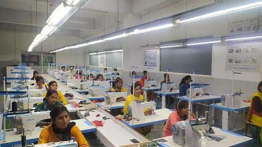
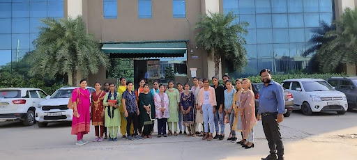
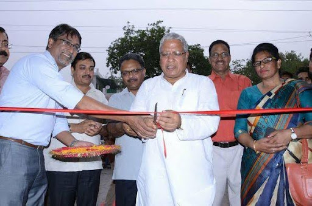
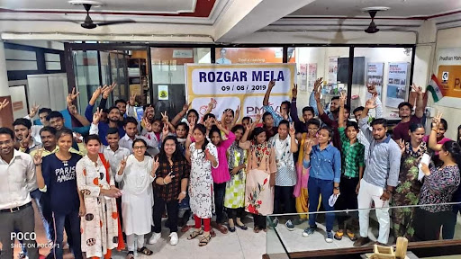
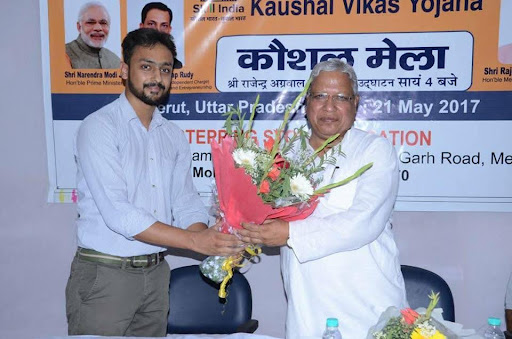
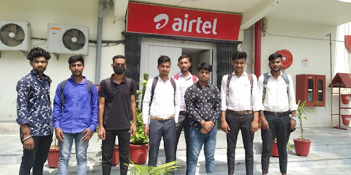
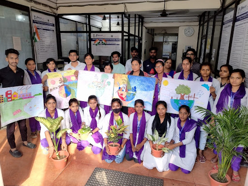
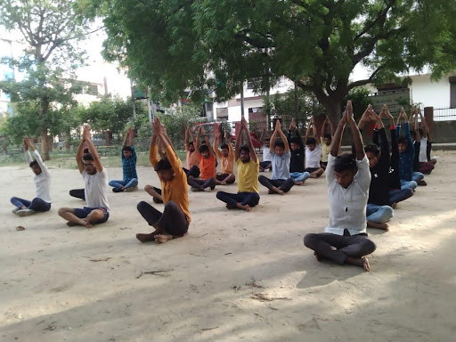

PMKVY
Pradhan Mantri Kaushal Vikas Yojana
Skill training with government certification and placement support.
We are a public charitable trust in Meerut. We train unemployed young people, with a special focus on women and rural families, certify them under government schemes, and help them into work or their own business.



Stepping Stone Foundation Trust was registered in Meerut in 2015 as a public charitable trust, to serve people who are too often left out of the job market.
We give unemployed young people the education and skills they need to join the mainstream workforce, support themselves, and give back to their communities. Our training runs under government schemes including PMKVY, DDU-GKY, UPSDM and NULM, alongside CSR partnerships with industry.
We believe skill development is the surest way to a prosperous and inclusive India. That is why we focus on women, reach out to villages, and shape every course around what employers actually need. A placement is the goal, but a better life is the point.
Every course ends in a recognised certificate, and most come with placement support.
Pradhan Mantri Kaushal Vikas Yojana
Skill training with government certification and placement support.
Deen Dayal Upadhyaya Grameen Kaushalya Yojana
Placement-linked training for young people from rural families.
Uttar Pradesh Skill Development Mission
Vocational training in local trades, open to every section of society.
National Urban Livelihoods Mission, with DUDA
Certified skill training for urban young people in need, built for long-term career growth.
Skills for school students
Employable skills for high school students in government institutions.
With Bosch
Extra certificates in communication and computer skills to strengthen every trainee's CV.
For rural women
Training in self-employment and home-based businesses, so women can earn on their own terms.
Part of every course
Communication, computer basics and workplace conduct, so trainees walk into interviews with confidence.
Melas, celebrations and visits that build confidence and connect trainees to employers.





Inclusive growth, by giving people across India the skills to contribute to their communities and the nation.
To close the employability gap with certified training that matches what industry needs, and to encourage enterprise.
Want to enrol, partner on a CSR project, or hire our trainees? Call, message or write to us.
Sanrisha Greentech, our sister organisation, provides trained staff and HR services to companies across Delhi NCR.
Visit sanrisha.com